Homero Simpson
El patriarca disfuncional de Springfield, rey de las meteduras de pata cómicas con su amor por la comida rápida y la siesta. Aunque su inteligencia rivaliza con una roca, nos enseña que es mejor ser feliz que tener razón, incluso por una rosquilla de chocolate.
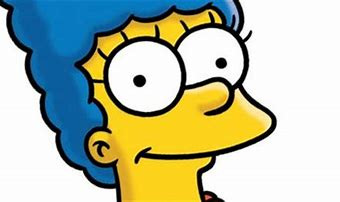
Marge Simpson
La madre compasiva de Springfield, reina del hogar y la paciencia. Su cabello azul esconde secretos tan grandes como su capacidad para mantener unida a la familia Simpson con amor y humor. Con su afro y su corazón grande, es la roca sobre la que se construye su hogar, encontrando alegría en lo simple y superando la locura con una sonrisa y un spray de pelo azul.
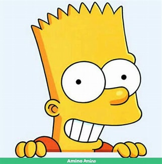
Bart Simpson
El rebelde encantador de Springfield, conocido por su ingenio afilado y sus travesuras escolares. Amante de las bromas pesadas y los cómics de Radioactiveman, es el niño más fresco de la ciudad con su fiel patineta. Aunque parece un alborotador, su corazón rebosa humor y amistad. Bart es el rey de las travesuras, el príncipe de las payasadas y el maestro de la burla rápida. Nunca hay un momento aburrido con él en la ciudad.
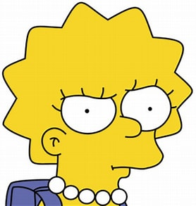
Lisa Simpson
La mente brillante y alma sensible de los Simpson. Amante de la música jazz y la filosofía oriental, es una activista luchadora por nobles causas. Aunque su intelecto la lleva por caminos complicados, siempre brilla en la oscuridad con su búsqueda de la verdad y su sentido de la justicia. Lisa es la heroína silenciosa de Springfield, la voz de la razón en un mundo caótico, ofreciendo esperanza para un mañana más brillante y melodioso.
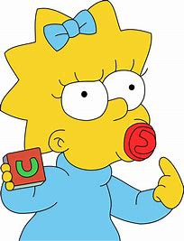
Maggie Simpson
La bebé encantadora que habla con acciones más que con palabras. Con su chupete como arma secreta y mirada astuta, es la pequeña gigante de los Simpson. Aunque parece ocupada con sus bloques o durmiendo, es maestra de la astucia. Sus aventuras, desde escapar de la guardería hasta liderar revoluciones de bebés, la hacen la heroína silenciosa de Springfield. Con su habilidad para encontrar diversión en lo simple y dejar a todos boquiabiertos con su ingenio infantil, es la pequeña rebelde con una causa: hacer sonreír a todos. Con Maggie Simpson, nunca hay un momento aburrido, incluso en pañales.
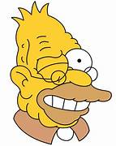
Abuelo Simpson
Anciano enérgico y extravagante de Springfield, es una fuente inagotable de anécdotas hilarantes y quejas interminables. Desde sus días de guerra hasta sus aventuras en el asilo, ha vivido una vida llena de altibajos, siempre con un toque de absurdo. Con su amor por el helado de malvavisco y su habilidad para escapar de situaciones peligrosas, es el anciano buscado para entretenimiento y sabiduría del pasado. Aunque su memoria a veces falla y su audición es selectiva, demuestra que la vejez es solo un número y que la vida siempre tiene algo gracioso que ofrecer, incluso con dientes falsos y dudosas historias.
Lenny Leonard
El compañero de trabajo de Homero en la Planta Nuclear de Springfield, conocido por su naturaleza relajada y su humor seco. Siempre está ahí para compartir una cerveza Duff y una risa.
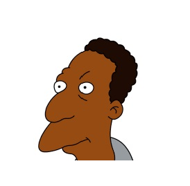
Carl Carlson
Otro colega de Homero en la planta, con una actitud un poco más seria pero igual de amigable. Es conocido por sus comentarios perspicaces y su lealtad hacia Homero y Lenny.
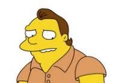
Barney Gumble
El mejor amigo de Homero desde la infancia, famoso por su amor desenfrenado por la cerveza y su propensión a meterse en problemas. Aunque a veces sea un desastre, su corazón está en el lugar correcto.
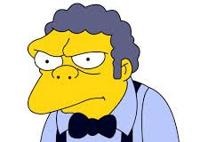
Moe Szyslak
El dueño de la Taberna de Moe, el bar más sombrío y deprimente de Springfield. Moe es conocido por su actitud gruñona, su fealdad y su mal genio, pero bajo esa apariencia áspera se esconde un corazón de oro (aunque un poco oxidado). A menudo se encuentra enredado en situaciones cómicas debido a sus desventuras amorosas, su mala suerte en los negocios y su relación conflictiva con sus clientes habituales, especialmente Homero Simpson.
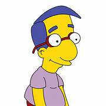
Milhouse Van Houten
El mejor amigo de Bart, conocido por sus gafas y su lealtad inquebrantable hacia Bart, incluso cuando este lo mete en problemas.
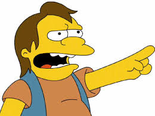
Nelson Muntz
El bravucón de la escuela, con una risa burlona y una actitud dura, pero que a veces muestra su lado más vulnerable.
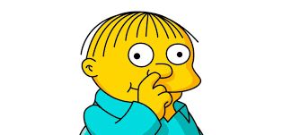
Ralph Wiggum
El chico un poco despistado y adorable de la clase, siempre diciendo cosas extrañas pero siendo inmensamente querido por todos.

Sherri y Terri
Las misteriosas y traviesas gemelas idénticas que siempre van de la mano y parecen tener una conexión telepática. Con sus voces melódicas y su actitud un tanto enigmática, siempre están listas para burlarse de Bart y otros niños de la escuela con sus bromas ingeniosas y su comportamiento un poco manipulador. Aunque a veces sean un poco intimidantes, su presencia agrega un toque de misterio y diversión a la dinámica de la escuela primaria de Springfield. ¡Son gemelas con estilo y actitud, listas para sorprender a cualquiera que se cruce en su camino!
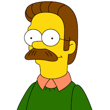
Ned Flanders
El vecino más amable y optimista de Springfield, conocido por su inquebrantable fe, su estilo de vida saludable y su capacidad para perdonar incluso las mayores transgresiones de Homero con un "¡Hididely-ho, vecino!". A pesar de su apariencia de chico bueno, a veces sorprende con su lado un poco excéntrico, como cuando se convirtió en la sensación del rock cristiano con su banda "Okilly Dokilly".
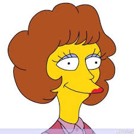
Maude Flanders
La difunta esposa de Ned, conocida por su dulzura y su devoción a su familia y a su fe. Aunque ya no esté presente en la serie, su recuerdo sigue siendo importante para Ned y los vecinos de Springfield.
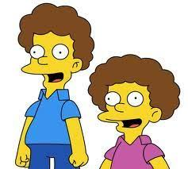
Rod y Todd Flanders
Los hijos de Ned, dos chicos dulces y devotos que siempre intentan seguir las enseñanzas de la Biblia y ser buenos ciudadanos. Rod es el mayor y más serio de los dos, mientras que Todd es un poco más juguetón y travieso, pero ambos comparten una relación cercana con su padre y son una fuente constante de alegría en la vida de Ned.
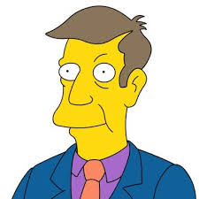
Seymour Skinner
El director de la Escuela Primaria de Springfield, conocido por su estricto sentido del deber y su desesperación por mantener el orden en medio del caos que es la vida escolar en Springfield. Aunque a veces pueda ser un poco torpe, siempre se esfuerza por hacer lo correcto, incluso si eso significa enfrentarse a Bart Simpson.
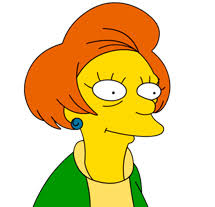
Edna Krabappel
La maestra de cuarto grado, conocida por su actitud cínica y desencantada hacia la enseñanza y la vida en general. A pesar de su aparente falta de entusiasmo, a menudo se muestra preocupada por el bienestar de sus estudiantes, especialmente por Bart Simpson, a quien le toca manejar con su astucia.
Elizabeth Hoover
La maestra de segundo grado, que parece estar perpetuamente desencantada con su vida y su carrera. Aunque intenta enseñar a sus jóvenes alumnos con entusiasmo, a menudo se ve frustrada por la apatía de Bart Simpson y otros estudiantes problemáticos.
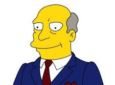
Superintendente Chalmers
El estricto e implacable superintendente del Distrito Escolar de Springfield, conocido por su voz profunda y su propensión a aparecer de repente para inspeccionar la Escuela Primaria de Springfield, especialmente cuando algo está fuera de lugar (que es casi siempre). Sus visitas suelen coincidir con las travesuras de Bart Simpson y otras calamidades escolares, lo que lleva a confrontaciones cómicas con el Rector Skinner.
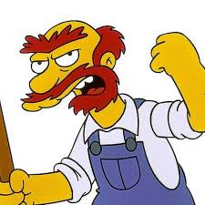
Willie
El conserje de la escuela, conocido por su acento escocés, su actitud gruñona y su disposición para realizar cualquier tarea, por desagradable que sea, para mantener la escuela en orden. Aunque a menudo es objeto de burlas de los estudiantes, su corazón está en el lugar correcto y a veces demuestra ser un aliado sorprendente para los niños de Springfield
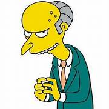
Señor Burns
El avaro y malévolo propietario de la Planta Nuclear de Springfield, conocido por su esqueleto casi cadavérico, su risa malvada y su desprecio por la humanidad en general. A menudo se le representa como un villano codicioso y despiadado que busca explotar a los ciudadanos de Springfield para su propio beneficio. Sin embargo, a pesar de su crueldad, a veces muestra destellos de humanidad y vulnerabilidad, especialmente en su extraña relación con su asistente personal, Smithers.
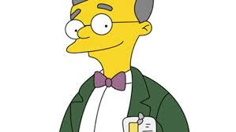
Waylon Smithers
El fiel asistente personal del Señor Burns, conocido por su lealtad inquebrantable y su amor no correspondido por su jefe. Siempre está dispuesto a cumplir las órdenes de Burns, por más absurdas o malvadas que sean, y a menudo se muestra preocupado por el bienestar de su jefe, aunque este rara vez lo aprecie. Aunque Smithers es un personaje compasivo y de buen corazón, a veces sus esfuerzos por complacer a Burns pueden llevarlo a situaciones cómicas y moralmente ambiguas.
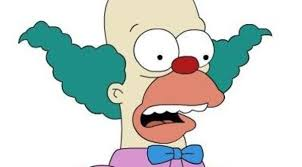
Krusty el Payaso
El payaso famoso de la televisión, conocido por su programa de variedades para niños "El Show de Krusty", que es un completo desastre plagado de accidentes y fallas técnicas. Aunque su personalidad alegre y su risa estridente son parte de su imagen pública, en realidad es un empresario cínico y codicioso, más preocupado por ganar dinero que por entretener a los niños. A pesar de sus defectos, Krusty tiene un lado tierno y a veces muestra una conexión genuina con sus fans más jóvenes, especialmente Bart Simpson.
Apu Nahasapeemapetilon
El propietario del Kwik-E-Mart, la tienda de conveniencia favorita de Springfield, conocido por su acento hindú, su amor por los dulces y su ingenio para regatear. Aunque a veces pueda parecer un estereotipo cultural, Apu es un personaje complejo con muchos matices, que lucha por equilibrar su cultura y sus creencias con su vida en Estados Unidos.
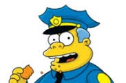
Jefe Górgory
El jefe de policía de Springfield, conocido por su torpeza y su amor por la comida rápida. Siempre está un poco fuera de lugar y sus métodos de policía dejan mucho que desear, pero su corazón está en el lugar correcto, aunque a menudo es opacado por su incompetencia.
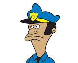
Oficial Lou
El oficial más sensato del departamento de policía de Springfield. Siempre intenta mantener un poco de cordura en medio del caos que es trabajar para el Jefe Wiggum, aunque a menudo es superado por las circunstancias.
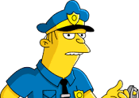
Oficial Eddie
El otro oficial del departamento de policía, conocido por ser un poco más callado que Lou. A menudo sigue el liderazgo de Lou y juntos intentan mantener las cosas bajo control en la medida de lo posible, aunque no siempre tienen éxito.
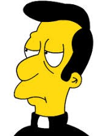
Reverendo Timothy Lovejoy
El líder espiritual de la Iglesia de la Comunidad de Springfield, conocido por su seriedad y su intento de mantener el orden en su rebaño. Sin embargo, a menudo se ve frustrado por la falta de interés de sus feligreses y las constantes distracciones que surgen durante sus servicios.
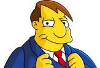
Mayor Joe Quimby
El corrupto y carismático alcalde de Springfield, conocido por su estilo de vida extravagante, su acento bostoniano exagerado y su tendencia a verse involucrado en escándalos políticos. Quimby es un político astuto y oportunista que siempre está buscando su propio beneficio, aunque a menudo lo haga a expensas de los ciudadanos de Springfield.
Hans Moleman
Un personaje peculiar y a menudo desafortunado de Springfield, conocido por su baja estatura, su apariencia desaliñada y su mala suerte crónica. A pesar de sus mejores esfuerzos, siempre parece estar en el lugar equivocado en el momento equivocado, lo que lo lleva a sufrir una serie interminable de accidentes y desgracias, desde ser atropellado por coches hasta ser golpeado por rayos.
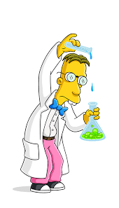
Profesor Jonathan Frink
Un genio científico con un coeficiente intelectual extraordinario y un habla rápida y nerviosa, conocido por su característico "¡Sí, indeedy, woo hoo!" y su tendencia a hablar en términos científicos complicados que a menudo dejan a los demás personajes de Los Simpson confundidos. Frink es el arquetipo del científico excéntrico, siempre absorto en sus inventos y experimentos, aunque a menudo con resultados desastrosos. A pesar de su genialidad, Frink es socialmente torpe y a menudo se encuentra marginado por sus compañeros de Springfield.